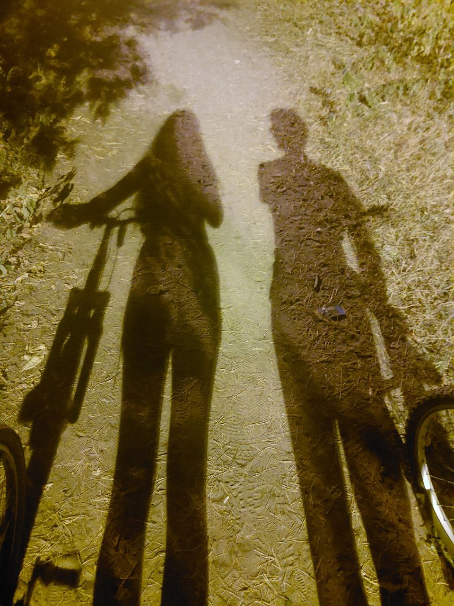
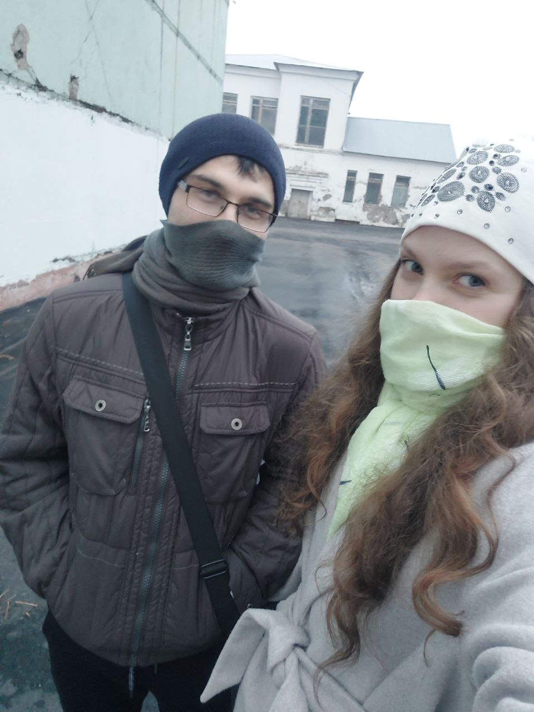
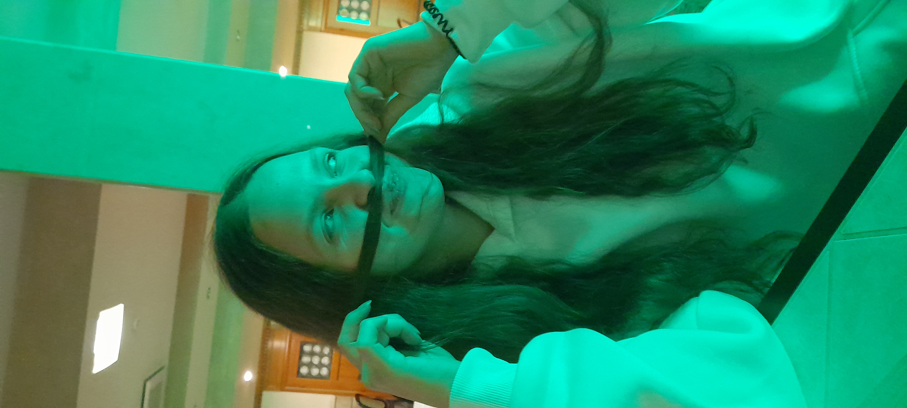
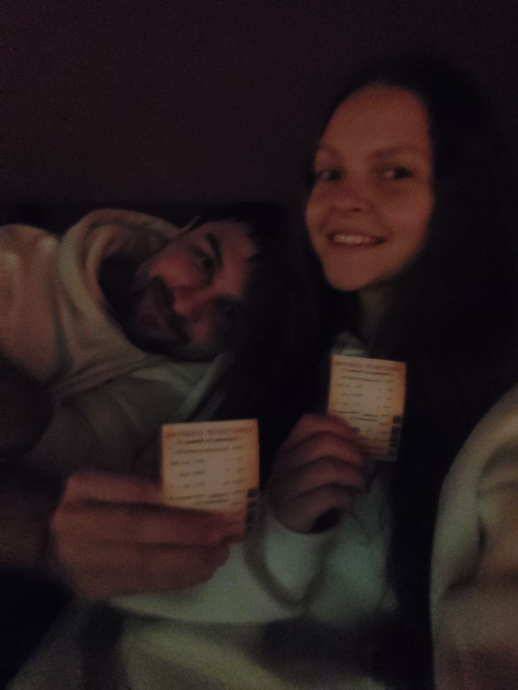
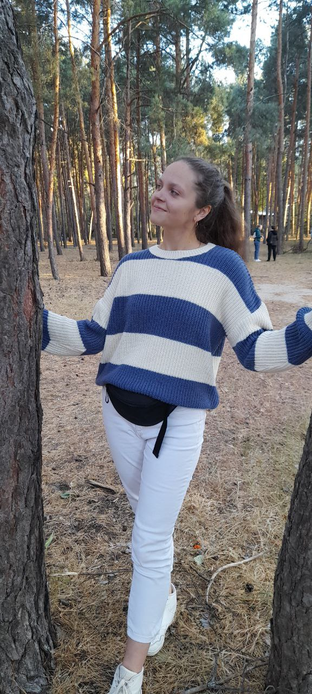
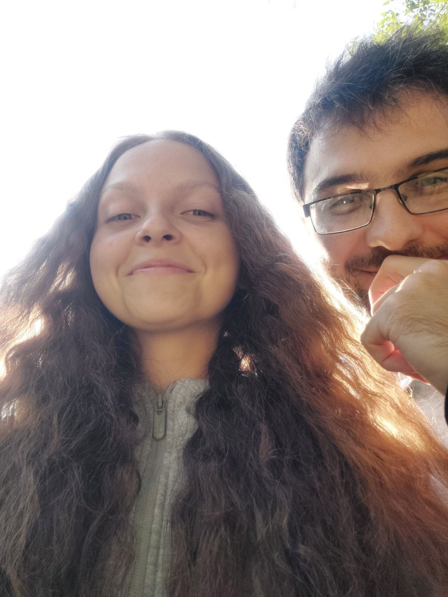
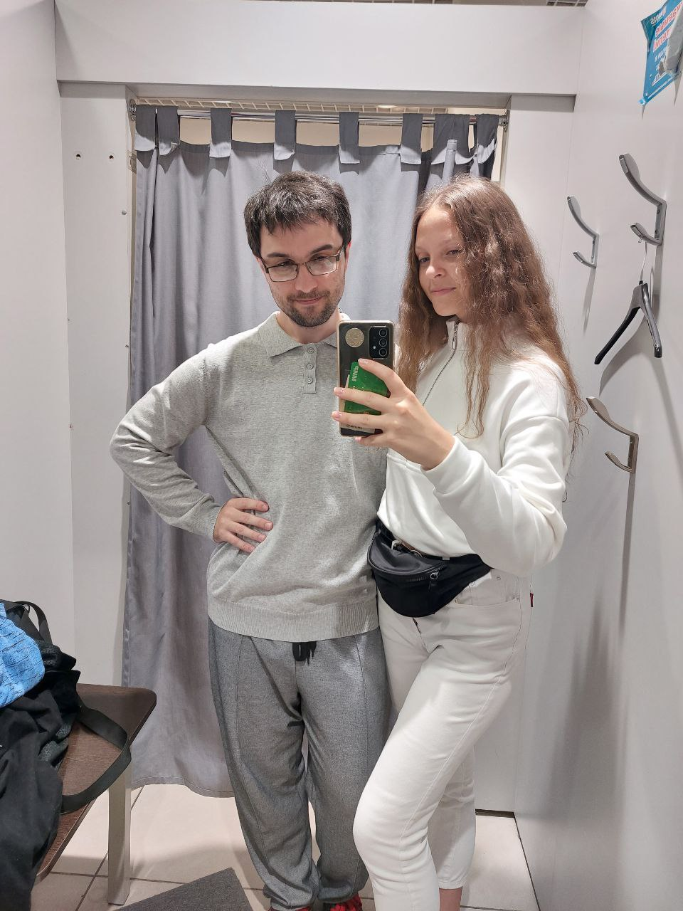
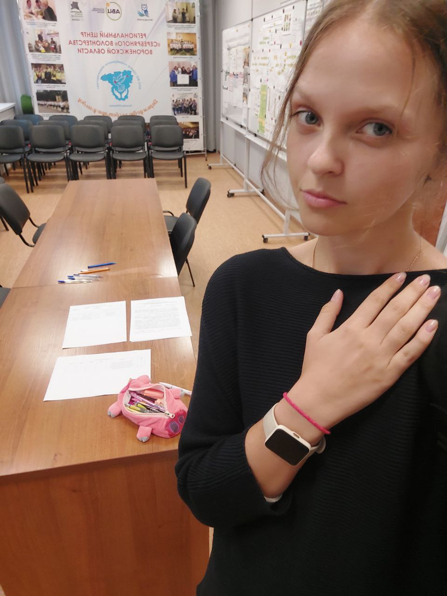

The Story of our LOVE!








Мы очень многое успели попробовать вместе. На день города мы любовались видами
нашего города. Общались обо всем. Пробовали разную еду, которая друг другу нравится.
Поздно ночью мы разошлись с эйфорией в душе. Мы наблюдали за свадьбой позже вечером
нас было не разлучить в парке. Мы наблюдали красоту города со смотровой. Мы шалили в
примерочных, ловя косые взгляды работников. Мы скидывали друг другу фотки перед
зеркалом. Фоткались везде где только могли. Буквально под каждым деревом был
запечатлен наш с тобой союз. Ни в чем себя не отказывали, лопали все что только
вкусно выглядит. Ты познакомила меня со своими друзьями. Со своими вкусами. С
многим. Я теребенькал твой синтезатор, ты же показывала свой мастер класс на гитаре.
Это безподобно. Мы устраивали ночи со свечами, окутанные сумраком, мы любили друг
друга. Также под покровом ночи и с фонариками смартфона мы устраивали пикник
своеобразный. Наши ночные осенние прогулки по парку... Те поцелуи под покровом тьмы.
Тот фонарь освещающий только тебя и меня. Нашу потерю порой безобидного фантика. Мы
прошаривали лес и округу в его поисках. Мы попадали под дождь и бежали домой под
моей мастеркой. Я лазал по деревьям в попытках показать обезьянуса. В итоге
получилось пацарапать себя. Я таскал тебя на руках, когда ты этого не ожидала и
постоянно делала безупречную реакцию, тем самым провоцирую меня еще и еще. Мы
сдавали экзамен вместе. Перед занятиями мы заказали шаурму и шутили над работником,
который шутил над нами. Мы мёрзли вместе, ожидая экзаменов. Ты получила свои права,
я был тогда рядом с тобой, абсолютно горд тобой. Мы затусили в боулинг, катались на
великах. После пробежки я запрыгивал шалуном к тебе, к своей любимой. Мы были вместе
как настоящая пара. Мы были ею. Пробовали разные твои чаи. Ты подсадила меня на
ромашку. Собрали пару пазлов вместе. Тусили после твоей практики с пенсионерами. Я
тогда любовался твоим строгим стилем одежды. Мы ходили на глупые фильмы, затарившись
хавкой с магазина. Ты показала мне своё детство в Хаве. Там же мы успели прогуляться
и по пути домой в машине нас обуяло чувство нежности друг к другу. Ты подобрала нам
family look и мы были теми самыми милашками. На новый год мы прыгали по дороге,
слушали музыку уличных артистов, ты утопала в некоторых песнях. Я утопал вместе с
тобой. Мы гуляли, но главное, были вместе. Я написал тебе письмо из будущего, в
котором описал все свои мечты по отношению к тебе и к нашему союзу. Мы первыми
пришли на горку с ватрухой расчищая путь другим. Я тогда чуть не выбил себе глаз, ты
же влетела в какого-то чела. Нам было весело. До этого мы делали снежных ангелов и баловались в
снегу. Мы были вместе. Любили друг друга. Мы любовались снежными пейзажами обиневших веток. В конце-то
концов мы катались на коньках и несмотря на паршивые коньки мне нравилось быть с
тобой тогда. Мы искали кино интересное обоим. Смотрели твоё и моё. Залипали в
обнимку в телефоне. Как-то я прошмыгнул к тебе ночью и мы провели волшебную ночь
вместе, наполненную семейной атмосферой. Всегда были рука за руку. Всегда радовались
друг другу. Всегда поддерживали друг друга. Всегда любили друг друга. В каждой
истории был целое озеро, море или даже океан эмоций. Это любовь.
Моя любовь к тебе
вечна Наташа!
В тот момент, мы были счастливы